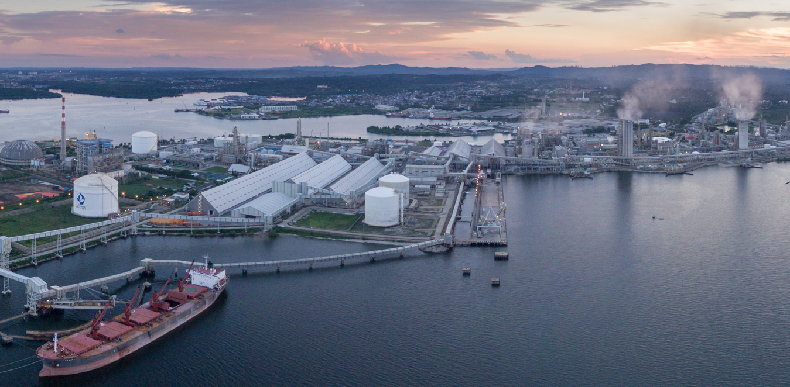

Zefanya's
Hometown
Bontang
is a city in East Kalimantan. It's one of the richest city in Indonesia.
There are three big companies with different fields in this city.
Those companies are Badak NGL (Natural Gas Liquid),
Pupuk Kalimantan Timur (Fertilizer), and Indominco Mandiri (Coal)
Even though it's one of the richest city in Indonesia,
It's not too urban while also still being an advanced
enough city. Bontang itself is located in the middle of a
forest, because of that, it's not too hard to find a forest there.